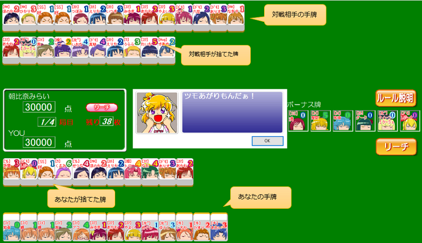

遊び方(基本)
キュアジャンとは？
プリキュアと麻雀を組み合わせたオリジナルゲームです。「プリキュアは好きだけど麻雀はよく分からない･･･」 という人でも大丈夫！麻雀よりもルールを単純化しているので、麻雀の知識が全くなくても遊べます！
ゲーム画面
※画面は開発中のものであり、変更される可能性があります
ゲームのおおまかな流れ
- 最初に１３枚の牌が配られます。
- 各プレイヤーは、順番に「１枚ずつ牌を引いて、１枚選んで捨てる」のを繰り返します。
- 後述する「手の作り方」にしたがってアガリになったプレイヤーが得点を獲得します。
- 1～3の手順を繰り返し、ゲーム終了時点で一番得点の高いプレイヤーが勝利します。
かなりおおざっぱな説明だけど、キュアジャンはこんな感じのゲームだよ！
プリキュアが描かれた牌をそろえて手を作り、相手より早くアガリを目指すんだね！だいたいのイメージは分かったかな？
「手」とか「アガリ」とか、まだよく分からない言葉があるけど…
それはこれから説明していくから大丈夫よ！